Materials and Masks can now be accessed directly via their dedicated icon
When adding a material in the layer stack, it will now have a new mask icon. Clicking on this second icon will display the blending parameters of the material.
Substance Alchemist 2019.1 "Sesame" lets you share your assets with its new project management. The layer stack has been completely rebuild to improve the workflow. Additional controls and information have been added to the viewport. A new version of our delighter improves the quality and accuracy of your materials.
Release date: 4 November 2019
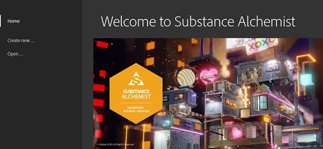
Substance Alchemist now has a welcome screen that allows you to quickly jump on your latest project but also to create new ones. The welcome screen also provides a few links to our existing platforms, such as Substance Academy.
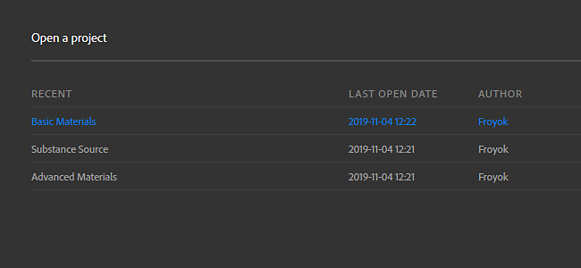
Version 2019.1 introduce the notion of projects, which can gather material collections. Projects can also be exported to be shared to other computers.
To learn more about projects, see: Project Management.
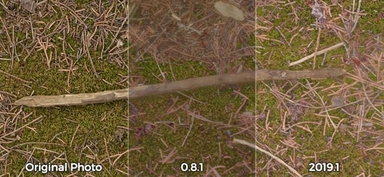
We improved our delighter, which is used to remove shadows from your photos. It now preserves details and the original colors of the various surfaces which should improve the accuracy of the generated materials.
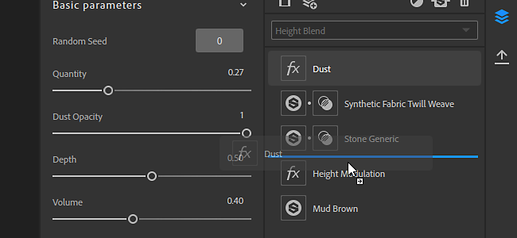
The Layer Stack has been rebuild from scratch to expand its possibilities and actions. Notable changes are:
Materials and Masks can now be accessed directly via their dedicated icon
When adding a material in the layer stack, it will now have a new mask icon. Clicking on this second icon will display the blending parameters of the material.
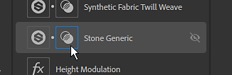
Blend mode can be directly changed from the toolbar
From now on, when a Material layer is selected, its blending mode can be changed directly from the Layer Stack toolbar, without the need to click on the mask.
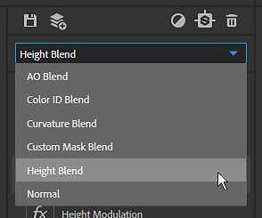
Assign bitmap to specific Scan inputs
When imported bitmap to create your materials from scan, you can assign the right usage per bitmap.
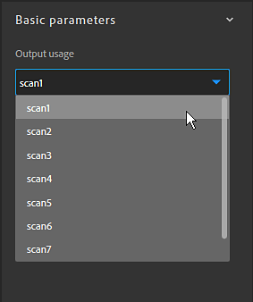
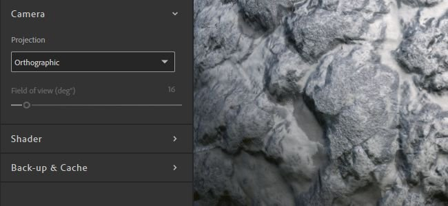
A few new features have been added to the viewport which improve its usage. These new settings can be accessed in the Viewer Settings panel.
Camera mode
The camera projection mode allows to choose between Perspective and Orthographic.
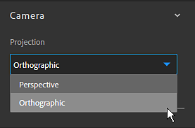
Camera field of view
You can now change the viewport's camera Field of View (FOV). Adjusting this value can help the visualizing realistically your materials. The Field of View can only be controlled when in Perspective projection mode.
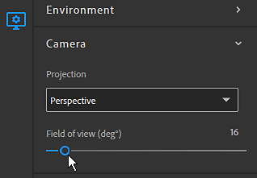
Resolution and bit depth per channel
The 2D view now displays the texture resolution and bit depth of each channel.
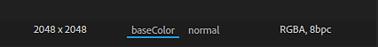
(Released January 30, 2020)
Added:
Fixed:
Known Issues:
(Released January 28, 2020)
Added:
Fixed:
Known Issues:
(Released December 11, 2019)
Added:
Fixed:
Known Issues:
(Released November 26, 2019)
Added:
Fixed:
Known Issues:
(Released November 04, 2019)
Added:
Fixed:
Known Issues:
Added:
Added:
Added: